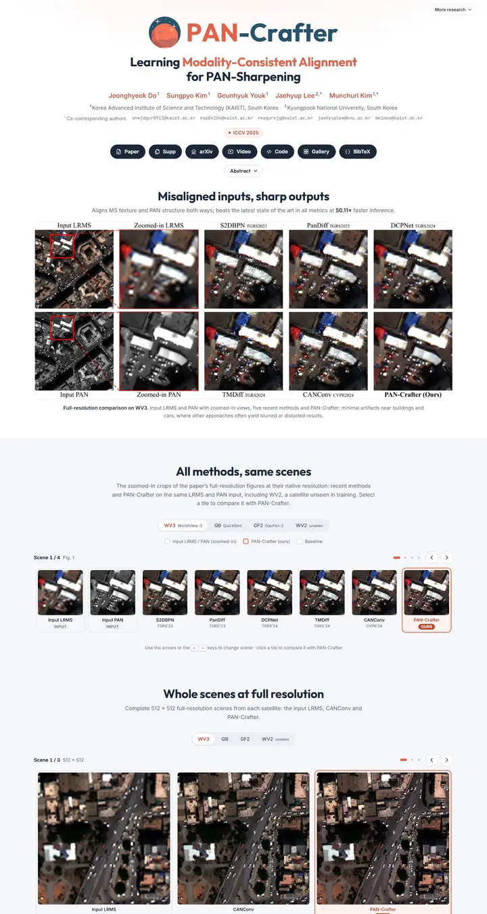

PAN-Crafter: Learning Modality-Consistent Alignment for PAN-Sharpening
Mars red over a navy night: a planet logo sets the colors, and every result gets a tidy tile, tab or table that points back to "ours".

Checked against the rendered page. Top nav only appears after scrolling past the hero; not in the first-viewport screenshot.
Why it is here
Confident custom brand (logo plus coral accent), clear hierarchy, labelled comparison grid and polished interactive scene browser with tabs and tiles. Thoughtful presentation of results.
Overview
Color Palette
Typography
Inter
PAN-Crafter: Learning Modality-Consistent Alignment for PAN-Sharpening
Abstract · Method · Results · BibTeX — 0123456789
Outfit
PAN-Crafter: Learning Modality-Consistent Alignment for PAN-Sharpening
Abstract · Method · Results · BibTeX — 0123456789
JetBrains Mono
PAN-Crafter: Learning Modality-Consistent Alignment for PAN-Sharpening
Abstract · Method · Results · BibTeX — 0123456789
Spacing & Shape
Page Modules
Guidelines
More like this

CRAFT: Training-Free Cascaded Retrieval for Tabular QA
A tidy product manual in pale blueprint blue, where every stage wears its own colored edge.

Efficient Self-Evaluation for Diffusion Language Models via Sequence Regeneration
A tidy stack of rounded cards washed in a blue-violet-apricot dawn, signed with a gradient wordmark.

FIGMA: Towards FIne-Grained Music retrievAl
A music journal on warm paper: a heavy Newsreader headline under a red kicker, big red serif numerals for the results, and figures resting in soft cream frames.

GuideDog: A Real-World Egocentric Multimodal Dataset for Blind and Low-Vision Accessibility-Aware Guidance
A quiet monograph page: one serif column, oxblood ink for the links, and a table that blushes only at its own row.

LaMI: Augmenting Large Language Models via Late Multi-Image Fusion
A careful conference handout: Noto Serif headings, navy outlined buttons and soft grey bands taking turns.

PairCoder++: Pair Programming as a Universal Paradigm for Verified Code-Driven Multimodal and Structured-Artifact Generation
A crisp white product page: a blue announcement strip, ink-black pill buttons and every figure on a soft-shadowed card.